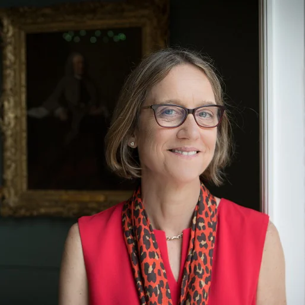
Alison Noble
Institute of Biomedical Engineering, University of Oxford.
SHAIPE is a collaborative group spanning engineering, psychology, and clinical practice.

Institute of Biomedical Engineering, University of Oxford.
Department of Experimental Psychology, University of Oxford.
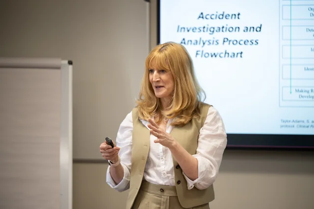
OxSTaR Centre, University of Oxford — Clinical Lead.
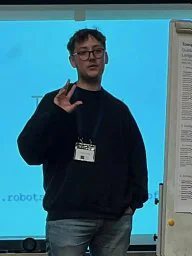
DPhil Student — Engineering
Interests: Human–AI Collaboration, healthcare, LLMs
Working on: Deferral applications in healthcare
Email: joshua.strong@eng.ox.ac.uk
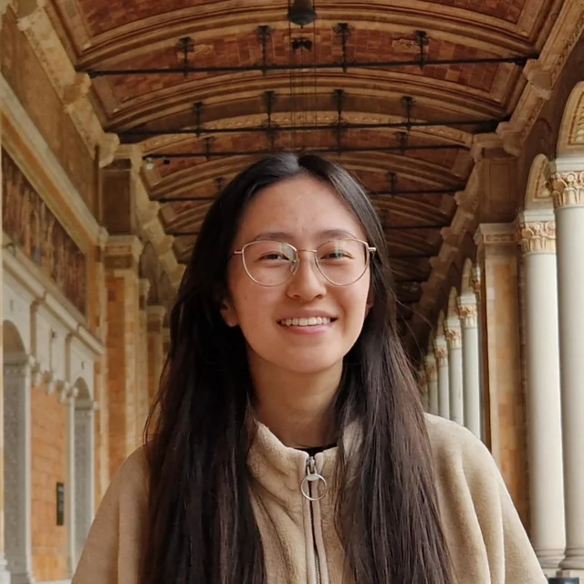
DPhil Student — Engineering
Interests: Human–AI Collaboration, AI in healthcare, AI for decision making
Working on: Deferral systems for healthcare
Email: emma.sun@eng.ox.ac.uk
Faculty Member — Engineering
Working on: multi-modal analysis for human–AI collaborative image analysis.
Personal webpage: cheng-01037.github.io. MICCAI workshops on Human–AI Collaboration and Uncertainty for Machine Learning in Medical Imaging.
Postdoc — Engineering
Interests: Human–AI Collaboration, VLMs
Working on: AI as An Instructor
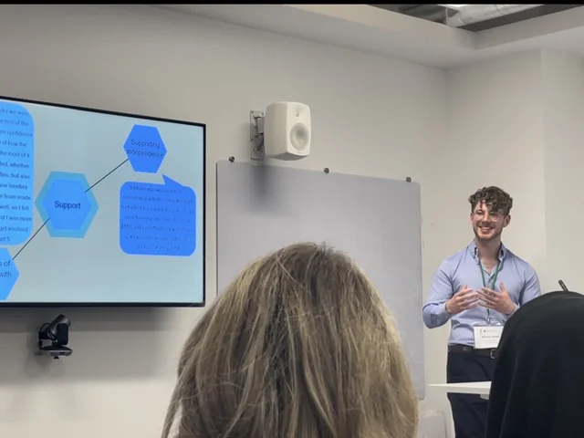
Academic Specialised Foundation Doctor — Clinical
Interests: AI in healthcare and education
Working on: Predictive Melanoma Models, AI in Dermatology
Email: nicholas.phillips@msd.ox.ac.uk
Open to collaboration: LinkedIn
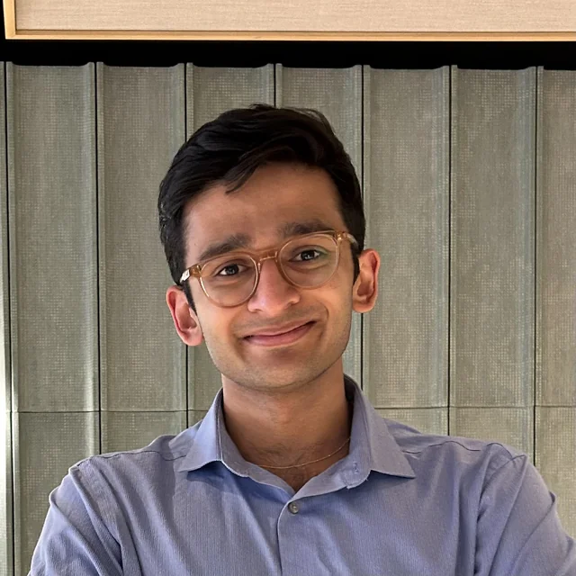
Academic Specialised Foundation Doctor — Clinical
Academic Specialised Foundation Doctor working at the interface of clinical medicine, data science, and translational AI, with a focus on safe deployment in dermatology and oncology.
Interests: Applied AI in dermatology and oncology; clinically grounded AI systems

Senior Clinical Research Fellow — Clinical
Senior clinical research fellow focused on situation awareness and decision making, with projects in clinical design and team decision support. Consultant anaesthetist at Guy’s and St Thomas’ NHS Foundation Trust.
Interests: Situation awareness, clinical design, human factors, resuscitation education
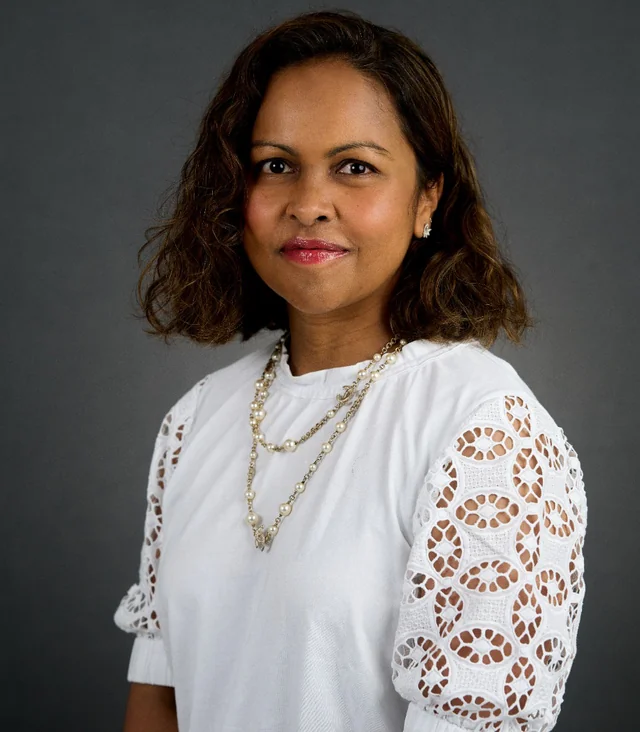
Consultant Dermatologist (OUHFT) & Honorary Senior Clinical Lecturer (RDM) — Clinical
International academic clinical expert in diagnosis and management of skin cancer and skin disease in immunosuppressed patients, with a strong background in AI for dermatology. Committed to safe, equitable, and ethically responsible AI.
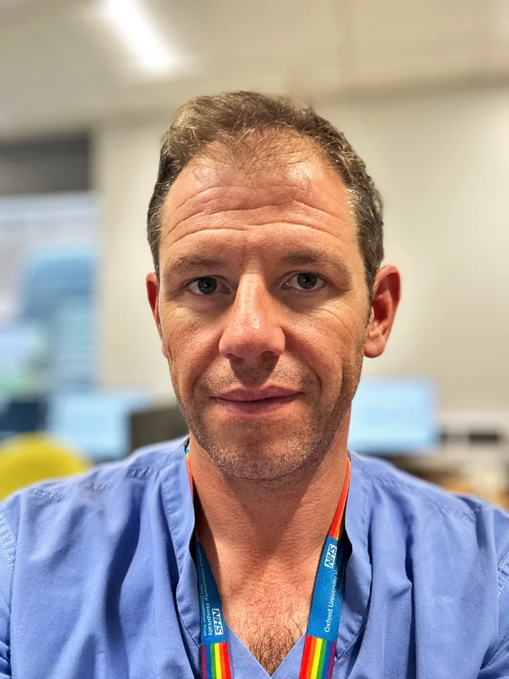
Chief Digital & Information Officer (OUHFT) & Consultant in Anaesthesia & Intensive Care — Clinical
Ben is Chief Digital and Information Officer for OUH NHS Foundation Trust and a Consultant in Anaesthesia and Intensive Care. He is passionate about ensuring information and data is presented to the right people in the right place to deliver higher quality care.
Director of Teaching — Clinical
UK-registered physician, medical educator, and researcher at Oxford Simulation, Teaching, and Research Centre. MSc in Clinical Education (Edinburgh); DPhil in Clinical Neuroscience (Oxford).
Interests: Novel technologies, large dataset analysis, generative AI in healthcare and education
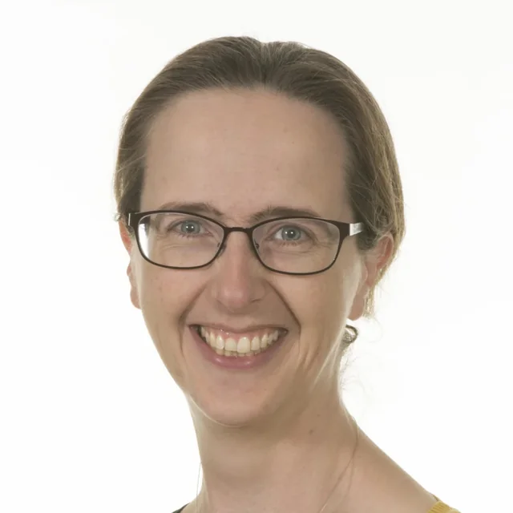
Consultant Anaesthetist — Clinical
Consultant anaesthetist at Oxford University Hospitals with roles in education and simulation; focused on safe anaesthesia in low-resource settings.
Interests: Anaesthetic workforce in low-resource settings; training in global anaesthesia; co-director, Global Anaesthesia Course (Oxford/Uganda)
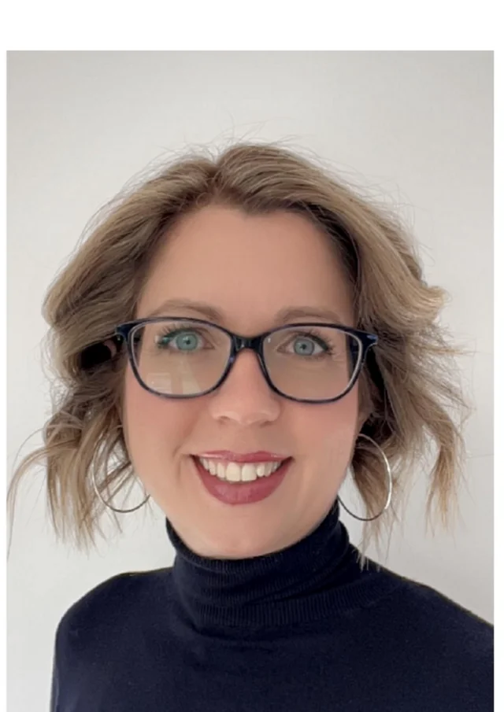
Consultant Anaesthetist — Clinical
Consultant anaesthetist at Oxford University Hospitals and medical education leader at the University of Oxford; leads VR Education at OxSTaR.
Interests: VR and immersive simulation, human factors, AI-enabled education, teamwork and assessment in acute care
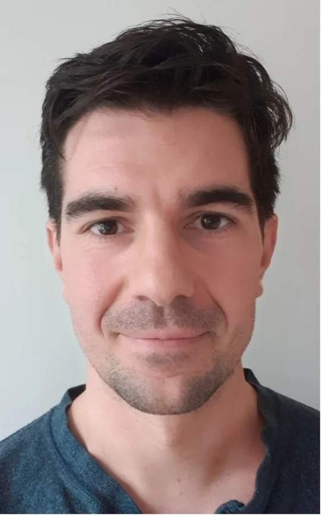
Anaesthetic Consultant — Clinical
Anaesthetic consultant at Oxford University Hospitals and award-winning clinical researcher and educator, focused on applying technology to improve patient outcomes and experience.
Interests: Cognitive outcomes after major surgery, medical education (skills acquisition and retention), clinical decision making, assessment of healthcare professionals
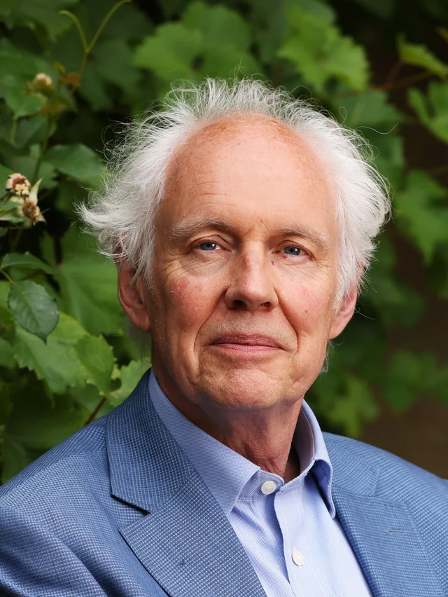
Researcher / Emeritus Professor — Psychology
Clinical psychologist who has led patient safety research since 1985. Founded the Clinical Risk Unit and held professorships at UCL, Imperial, and Oxford.
Interests: Patient safety, causes and consequences of harm, healthcare safety improvement
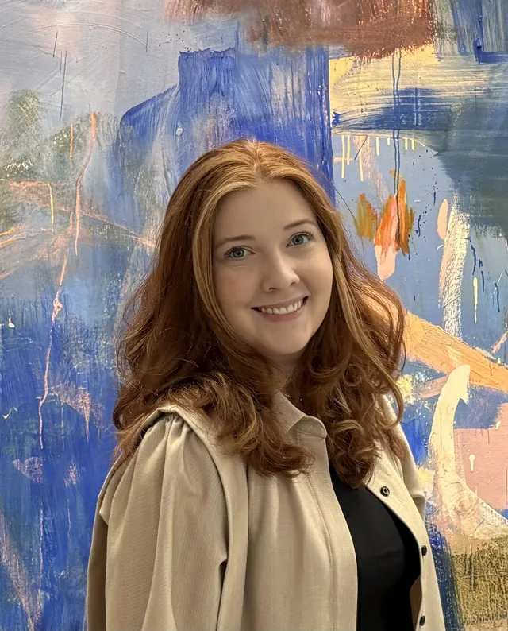
DPhil Student — Psychology
Interests: Cognitive and systems-level perspectives on clinical AI development and implementation
Working on: Evidence from real clinical environments across multiple specialties
Email: anna.todsen@lincoln.ox.ac.uk
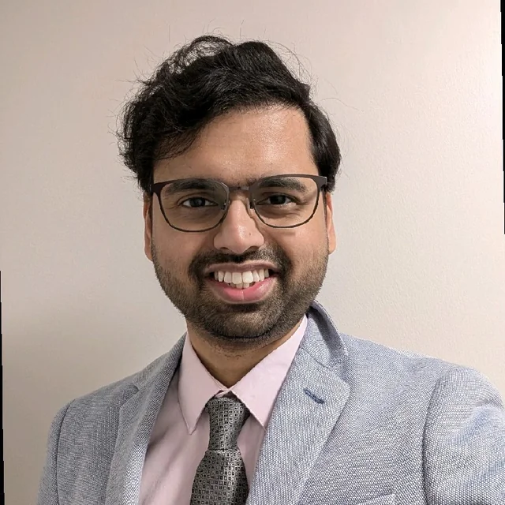
Postdoc — Engineering
Interests: Federated learning, human–AI collaboration, multimodal learning, agentic AI in healthcare
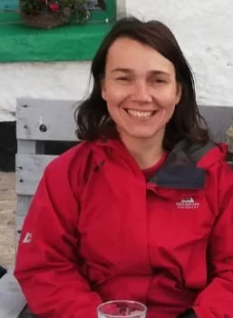
OxSTaR Centre Manager — OxSTaR
OxSTaR Centre Manager and critical care nurse focused on clinical leadership and patient safety. MSc in Patient Safety (Imperial College London, 2023).
Interests: Simulation for healthcare training; simulation-based rehearsal to identify and mitigate latent safety threats